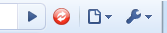

To show the Reload All Tabs button next to the address bar you would need to click Install
on the Reload All Tabs - Browser Action
page. This is a very light weight extension that just communicates to the other extension.
To remove the button, right click on the icon and choose Disable.